请根据您的角色选择相应流程:
Q1：什么是缺陷工作流？
A：缺陷工作流指的是缺陷从创建到关闭的处理流程。
Q2：缺陷工作流可以自定义吗？
A：oKit发布时会自带默认的缺陷工作流，同时，也支持用户自定义工作流。
Q3：缺陷工作流由谁来配置？
A：配置缺陷工作流包括三个方面：
一、系统管理员在后台设置缺陷工作流。
二、项目负责人在缺陷管理模块中选择本项目使用的缺陷工作流。
三、项目负责人再缺陷管理模块中设置项目参与人员的各缺陷状态转入权限。
Q4：什么是“缺陷状态转入权限”？
A：以状态“关闭”为例，假设用户“李小刚”是测试人员，团队规定，所有缺陷必须经由项目负责人“王小帅”确认后方可关闭，此时，可以设置用户“李小刚”没有状态“关闭”的转入权限。这样设置以后，用户“李小刚”将无法关闭缺陷，只能转移给项目负责人“王小帅”，由他最终确认后关闭。相应的，可以设置用户“王小帅”拥有状态“关闭”的转入权限。
Step1. 使用系统管理员账号，登录oKit系统后台（用户名为admin，默认密码为1）
Step2. 点击进入缺陷状态维护界面
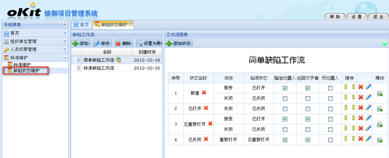
Step3. 点击“添加”按钮，添加一个新的缺陷工作“我的缺陷工作流”
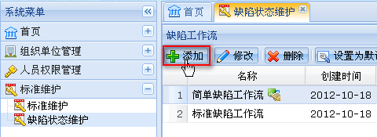
添加完成后如下图：
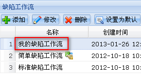
Step4. 点击“添加状态”按钮，打开添加状态界面
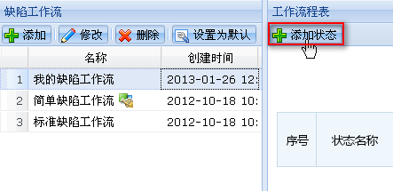
Step5. 点击图示按钮，打开状态选择框
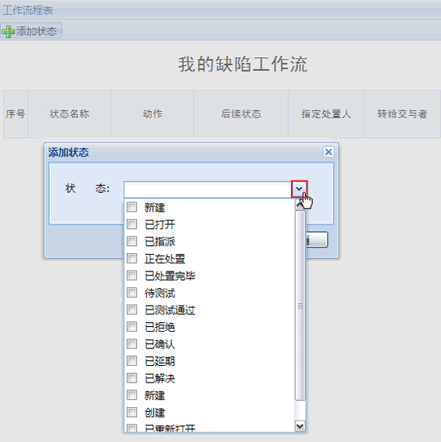
Step6. 勾选您希望定义的工作流所包含的状态（例如：新建，正在处置，已确认，关闭）
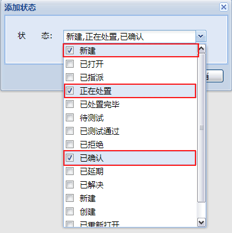
勾选成功并保存后，如下图
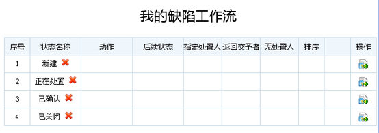
Step7. 点击图示按钮，为状态添加动作
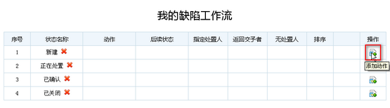
添加动作界面如下图
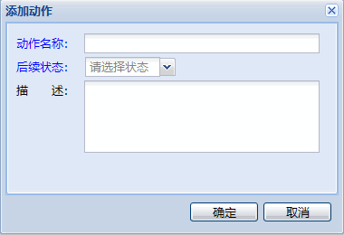
Step8. 输入动作名称，选择后续状态（例如：动作名称：“指派缺陷处理人”、后续状态：“正在处置”，）
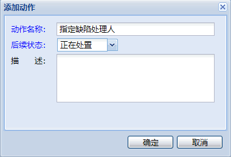
添加成功后如下图
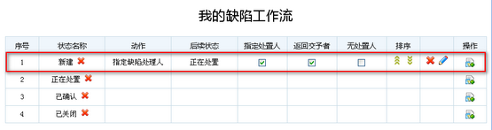
继续添加其他动作，完善该自定义流程，如下图
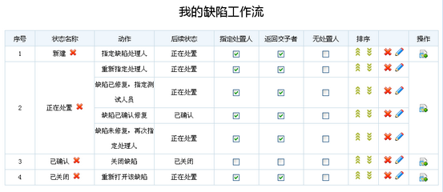
至此，一个自定义的缺陷工作流已经完成。
Step9. 登录oKit前台，点击进入项目管理模块

Step10. 点击进入项目“First Project”，缺陷管理模块
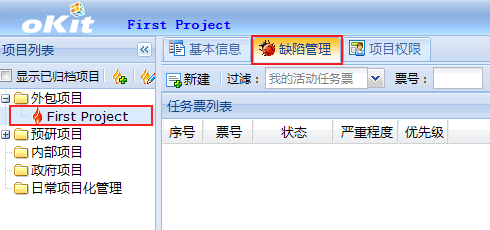
Step11. 点击“其他操作”按钮，并点击菜单项“设置”，打开缺陷管理设置界面
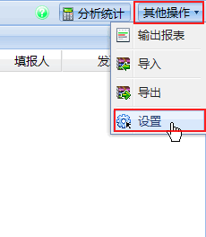
打开后界面如下图
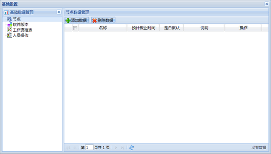
Step12. 点击“工作流程表”，打开缺陷工作流设置界面
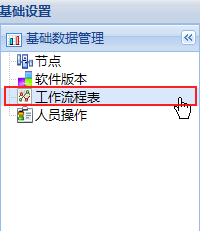
Step13. 点击“设置工作流”按钮，打开缺陷工作流选择窗口
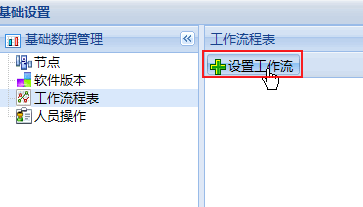
打开后界面如下图
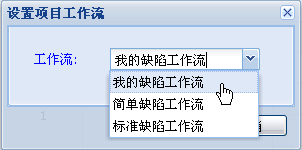
选中“我的缺陷工作流”并点击“确定”，如下图
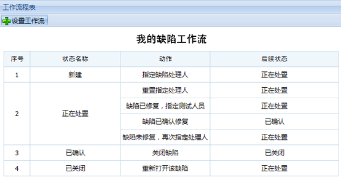
至此，缺陷工作流已指定，以下将指引您设置项目参与人员的各缺陷状态转入权限。
Step14. 点击“人员操作”，打开项目参与人员缺陷状态转入权限设置界面
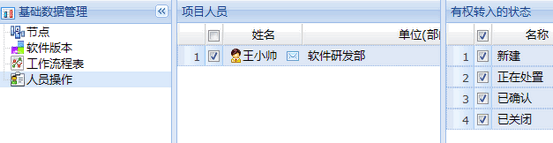
Step15. 逐个设置各用户的缺陷状态转入权限（无转入权限的状态，取消勾选）
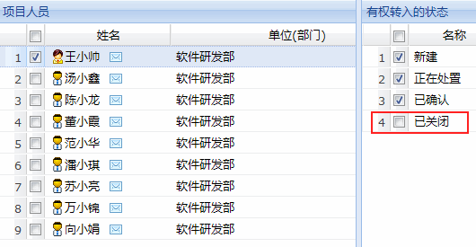
查看更多关于缺陷管理的资料，请点击